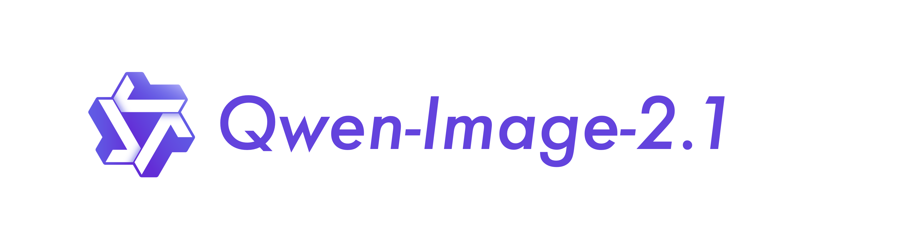

通义 Qwen 官方组织于 Hugging Face / ModelScope / GitHub 放出 Qwen-Image-2.1 开源权重：统一文生图与图像编辑，视觉生成组件约 7B（32 层 Single-Stream DiT），支持原生 RGBA 透明图、最多 10 张参考图、圈选/涂抹/蒙版局部编辑。HF API lastModified 2026-09-20T09:41:05Z（≈17:41 CST），落在昨 ~09:40 截稿之后，本窗漏报补入。属图像专用档，不当一般文本旗舰（new_flagship=false）；亦不驱动 MCP/Skill 推荐。

- 产品/事项
- Qwen-Image-2.1（文生图 + 图像编辑统一模型）
- 落款
- HF Qwen/Qwen-Image-2.1；ModelScope Qwen/Qwen-Image-2.1；GitHub QwenLM/Qwen-Image-2.1；官方 blog 链 qwen.ai/blog?id=qwen-image-2.1（CSR 壳，正文以 HF README 为准）
- 规格（厂商自报）
- 视觉生成约 7B / 32 DiT；原生 RGBA；最多 10 参考图；diffusers QwenImage21Pipeline
- 许可
- Qwen Research License（非商业默认；商用需另授权）
- 时点
- HF lastModified 2026-09-20T09:41:05Z ≈ 17:41 CST；昨截稿后漏报补入
- 是否新旗舰
- 否（图像专用档）
- 是否推荐条
- 否（非 MCP/Skill 工作流包）
与主流一般文本旗舰对照（定性）：Qwen-Image-2.1 为图像生成/编辑专用档（约 7B DiT，开源权重），不当 GPT-6 Astra / Claude Fable·Mythos 5.1 / Gemini 3.8 Flash / DeepSeek-V4.1-Flash 等一般文本旗舰同列；无官方公开与上述旗舰的同口径文本评测对照表，故不硬凑数字表。许可为 Qwen Research License（非商业默认）。
- 官方 README 强调四项：轻量高效（mixed-granularity attention + prefix KV cache）、原生透明与统一创作/编辑、多参考与局部编辑、纹理/排版/人像光感 refinement。
- 安装路径经 transformers≥5.17 + diffusers（含 git 安装指引）与 QwenImage21Pipeline.from_pretrained("Qwen/Qwen-Image-2.1"）。
- 支持常见宽高比至约 2048 级分辨率表（1:1 / 16:9 等，厂商表列）。
- 不当 new_flagship；不驱动 new_mcp_skill_rec；不与 Qwen4（云栖 9/22–24）混写。
关注度 · 🔥🔥。来源：huggingface.co · huggingface.co · modelscope.cn · github.com · qwen.ai。